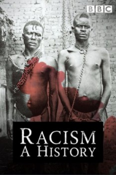

Racism: A History - Season 01 (2007)


Also known as:Racismo - Uma História
Country:United Kingdom, 150 minutes
Spoken languages:English
Genres:Documentary
Director(s):Paul Tickell
Writer(s):
Video Codec:Unknown
Number: 2731
Tomatometer:

--

--
IMDb Rating:


8.4/10 (152 votes)
Certification:
Storyline:
Explores the impact of racism on a global scale and chronicles the shifts in the perception of race and the history of racism in Europe, the Americas, Australia and Asia.
Cast:
Sophie Okonedo (as Self - Narrator, 3 episodes, 2007)
Medium: Digital Copy,
Location: SDPrata
Loaned: No
Aspect ratio: Unknown